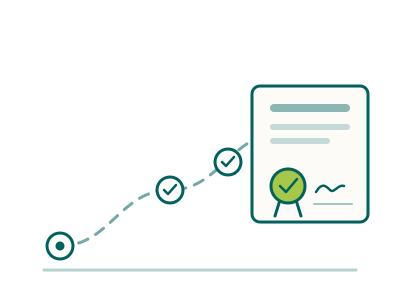

Registration
Can I work there?
It is the question almost everyone asks first, and the one people put off answering — because it looks like paperwork and feels like judgement on a career you have already built. We understand that. So here is the honest shape of it: a Board looks at your qualification and your practice and decides whether they count. That answer shapes the visa, and the visa shapes when you could realistically fly. Which means the rest of the move is waiting on this, and getting it answered early is a kindness to yourself.

Ten minutes, and your route has a name
Our aim is to make this part a little less daunting, so we built the checker to ask what the Board asks — where you trained, what you are registered as now, how recently you have practised — and then tell you which pathway you would most likely be assessed under, what it costs and roughly how long it tends to take. Nothing is submitted. No fee is paid to find out. If the answer is not what you hoped, you will at least know that today rather than in four months.
Not everyone wants to answer questions before they have had a look around, and that is fair. If you would rather read first, the registration guide for your country walks the same ground in order: registration in New Zealand or registration in Australia.
Your Board
Find your Board, and what we have written for it
There is no single system to learn. Registration is profession by profession, and each Board sets its own rules, which is why advice from a colleague in another discipline so often turns out not to apply to you. Where we have written a guide, it explains the pathways and what that Board really looks at; the checklist beside it lists every document in the order it is worth gathering them, and remembers where you got to. Where we have not written one yet, we say so rather than pointing you at something vague.
Medical Radiation Technologists Board (NZ) · Medical Radiation Practice Board of Australia
Physiotherapy Board of New Zealand · Physiotherapy Board of Australia
PBNZ guideChecklistAustralia in preparation
Occupational Therapy Board of New Zealand · Occupational Therapy Board of Australia
OTBNZ guideChecklistAustralia in preparation
New Zealand Psychologists Board · Psychology Board of Australia
NZPB guideChecklistAustralia in preparation
Medical Sciences Council of New Zealand · state-based in Australia
Medical Council of New Zealand · Nursing Council of New Zealand · Midwifery Council · Ahpra Boards in Australia
Check your pathwayHow NZ registration worksBoard guides in preparation
One more thing, and it is genuinely open: we are happy to read an application before the Board does, whether or not we ever place you. That includes the professions we do not recruit into. It costs you nothing and it has saved people months — just ask.
Where people get stuck
Three things that quietly set your timeline
It is rarely the assessment itself that holds people up. It is the slow, ordinary things around it — and in our experience these three are what decide whether registration takes four months or nine. None of them is difficult. They just take longer than anyone expects, so it helps to know now.
Certificates of Good Standing
You will need one from every regulator you have ever held, they usually go to the Board directly, and they expire. Ask too early and they lapse; too late and everything else waits on them. There is a window, and your checklist marks it.
The English-language rule
This one surprises people who have practised in English for twenty years. It turns on where you trained and were assessed rather than on nationality, and each Board decides for itself what counts as evidence and for how long. Worth settling before any fee is paid.
References that answer the question
A thin reference is the most common reason a Board comes back with questions, and it is almost never the referee’s fault — they simply were not told what was being looked for. A short conversation with them beforehand changes what they write.
That is our experience rather than a rule, and we try to keep the two clearly apart. The Board’s own document list, linked from every guide and checklist, is what actually governs your application — and we cite it with the date we last checked it, so you can see how fresh it is.
Alongside registration
Worth a look before you commit to anything
Registration answers whether you can work. It says nothing about whether you would want to, or whether the move makes sense for the people coming with you. These three are where that starts to become clear.
What changes about the job itself
The title, what your scope actually covers, how pay is set, and where you would be needed. Different enough from home to be worth twenty minutes before anything else.
Every profession → Still decidingAustralia or New Zealand?
If you are weighing the two, this is the honest comparison. Registration, pay, housing and visas differ more than most people expect, and this choice shapes everything after it.
Compare the two → Your planSomewhere to keep all this
A plan built around your household and your dates. It remembers where you got to, and shows you one next step rather than twelve.
Build my journey →What next?
If the answer is yes, money is usually the next question
Two halves to it: what you would earn once you are there, and what the move asks of you before you earn anything. Both have real numbers behind them, which is unusual in this industry — pay in the public systems is set by collective agreement and published, and every fee in our calculator is one you could look up yourself. What could I earn? puts both halves together, honestly.
Indicative pay, and how it is set
What the agreements say, and what that tends to mean for where you would land on the scale.
Pay in New Zealand → AustraliaIndicative pay, and how it is set
Award and enterprise agreements, state by state, in figures you can actually use.
Pay in Australia → Before the first payWhat the move costs
Assessment, registration, visa, flights, shipping, a rental bond. They tend to arrive together, and mostly before your first pay.
Cost calculator →